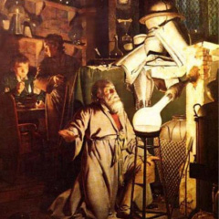
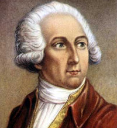
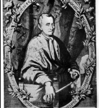
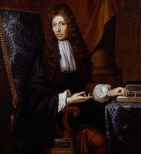
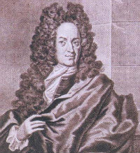
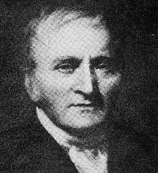

Pode parecer curioso e ao olhar de alguns, até mesmo engraçado, mas, quase nunca paramos para pensar que a química que aprendemos na matéria da escola, não está só nas lições de casa e deveres escolares. Ela está presente nas nossas vidas onde menos imaginamos.
Estamos cercados por ela, aonde quer que vamos. É pela química que existem diversas coisas úteis no dia a dia de uma pessoa. Atividades simples que exercemos como, tomar banho, lavar os cabelos, escovar os dentes, e até passar desodorante, entre muitas outras coisas envolvem a química. E muitas dessas atividades só podem ser realizadas através e pela química, porém, quase ninguém sabe o que acontece realmente durante toda essa rotina diária.
Pode parecer curioso e ao olhar de alguns, até mesmo engraçado, mas, quase nunca paramos para pensar que a química que aprendemos na matéria da escola, não está só nas lições de casa e deveres escolares. Ela está presente nas nossas vidas onde menos imaginamos.
A ocorrência de uma reação química é feita devido ao aparecimento de novas substâncias, também chamadas de produtos, diferentes das originais que recebem o nome de reagentes. Quando as substâncias reagem, em determinados momentos ocorrem fatos visíveis que confirmam a ocorrência da reação e entre eles, um dos mais conhecidos é o desprendimento de gás e luz, mudança de coloração e cheiro, formação de precipitados, entre outros.
Um exemplo de reação química bastante comum em nosso cotidiano é a reação de combustão. Para ocorrer é necessária a presença de apenas três fatores, entre eles, um combustível, comburente e energia de ativação. Essa reação acontece na queima de um combustível que pode ser a gasolina, álcool, ou algum outro. Isto ocorre através da energia de ativação, na presença de um comburente que, em geral, é o oxigênio do ar (O2).
Além disso, diversas substâncias químicas também estão presentes em nosso cotidiano, mas, passam despercebidas aos olhos de muita gente, pelo fato da falta de conhecimento. Isso porque, elas não recebem o nome oficial da forma quimicamente falando, mas sim, passaram por motivos de facilidade da fala, adquirindo diversos outros nomes mais populares.
Pode ser citados muitos exemplos disso, entre eles, soda cáustica: hidróxido de sódio, sal de cozinha: cloreto de sódio, naftalina: naftaleno, aspirina: ácido acetilsalicílico, leite de magnésia: hidróxido de magnésio, cal apagada, cal hidratada ou cal extinta: hidróxido de cálcio, cal viva ou cal virgem: óxido de cálcio, mármore, calcário: carbonato de cálcio, água oxigenada: peróxido de hidrogênio, amoníaco: hidróxido de amônio, gás carbônico: dióxido de carbono, barrilha: carbonato de sódio, carbinol: álcool metílico, creolina: mistura de cresóis, formol: metanal, acetileno: etino e acetona: propanona.
Além de muitos outros utensílios úteis que são usados todos os dias, da qual a maior parte das pessoas não sabem de onde vem ou o que representam na química.
A história da química se inicia ainda na Pré-História.A história da química está diretamente ligada ao desenvolvimento do homem, já que abrange todas as transformações da matéria e suas teorias correspondentes. Com frequência, a origem da química se relaciona intimamente com a história dos químicos e — segundo a nacionalidade ou tendência política do autor — ressalta em maior ou menor medida os sucessos alcançados num determinado campo ou por uma determinada nação. De fato, a ciência química surge no século XVII, a partir dos estudos de muitos dos cientistas da época. Considera-se que os princípios básicos da química se recolhem pela primeira vez na obra do cientista britânico Robert Boyle, The Sceptical Chymist (1661). A química, como tal, começa a ser explorada um século mais tarde, com os trabalhos do francês Antoine Lavoisier e suas descobertas em relação ao oxigênio, à lei da conservação da massa e à refutação da teoria do flogisto.
 O princípio do domínio da química (que para alguns antropólogos coincide com o princípio do homem moderno) é o domínio do fogo. Há indícios de que há mais de 500.000 anos, em tempos do Homo erectus, algumas tribos conseguiram tal feito. O domínio do fogo não só dava luz e calor na noite, como ajudava o homem na proteção contra os animais selvagens. Também permitia a preparação de comida cozida, a qual continha menos micro-organismos patogênicos e era mais facilmente digerida. Assim, baixava-se a mortalidade e melhoravam as condições gerais de vida. O fogo também permitia conservar melhor a comida, especialmente as carnes e os peixes.
Outro campo de desenvolvimento que acompanhou o homem desde a Antiguidade até o laboratório moderno é a cerâmica. Suas origens datam da pré-história, quando o homem descobriu que os recipientes feitos de argila mudavam suas características mecânicas e incrementavam sua resistência frente a água caso fossem esquentados no fogo. Para controlar melhor o processo, diferentes tipos de fornos foram criados. Relacionado com o desenvolvimento da cerâmica está o desenvolvimento do vidro a partir do quartzo e do carbonato de sódio ou de potássio. Seu desenvolvimento igualmente começou no Antigo Egito e foi aperfeiçoado pelos romanos.
O filósofo grego Aristóteles pensava que as substâncias estavam formadas por quatro elementos: terra, vento, água e fogo. Paralelamente, surgia outra teoria na época: o atomismo, a qual postulava que a matéria estava formada por átomos, partículas indivisíveis que poderiam ser consideradas suas unidades mínimas. Esta tese, proposta pelo filósofo grego Demócrito de Abdera não foi muito popular na cultura ocidental, dado o peso das obras de Aristóteles na Europa. No entanto, tinha seguidores (entre eles Lucrécio) e a ideia ficou presente até o princípio da Idade Moderna.
Entre os séculos III a.C. e XVI d.C., a química estava dominada pela alquimia. O objetivo de investigação mais conhecido da alquimia era a procura da pedra filosofal, um método hipotético capaz de transformar os metais em ouro. Na investigação alquímica desenvolveram-se novos produtos e métodos para a separação de elementos químicos. Deste modo, foram-se assentando os pilares básicos para o desenvolvimento de uma futura química experimental.
Um dos principais processos de transformação, a metalurgia começou com o descobrimento do cobre. Depois, por experimentação ou como resultado de misturas acidentais, descobriu-se que suas propriedades mecânicas poderiam ser melhoradas em suas ligas de metais.
Os Hititas foram uns dos primeiros a obter o ferro a partir de seus minerais. Esse processo é muito mais complicado, já que requer temperaturas mais elevadas e, portanto, a construção de fornos especiais. No entanto, o metal obtido era de baixa qualidade, com um elevado conteúdo em carbono, tendo que ser melhorado em diversos processos de purificação e, posteriormente, ser forjado. A humanidade demorou séculos para desenvolver os processos atuais de obtenção do aço (geralmente por oxidação das impurezas insuflando oxigênio ou ar no metal fundido, método conhecido com o nome de “processo de Bessemer”). O seu domínio foi um dos pilares da Revolução Industrial.
Outra grande realização nesse sentido foi a obtenção do alumínio. Descoberto no princípio do século XIX, este era obtido por meio da redução de seus sais com metais alcalinos. Seu preço superou o do ouro: era tão apreciado que vários talheres presenteados à corte francesa passaram a ser fabricados a partir do mesmo.
A química como é concebida atualmente começou a tomar forma entre os séculos XVI e XVII. Nessa época, começou-se a estudar o comportamento e as propriedades dos gases, se estabelecendo técnicas de medição. Pouco a pouco o conceito de elemento como uma substância elementar que não podia ser descomposta em outra foi ganhando forma.
Por volta do século XVIII a química adquiriu definitivamente as características de uma ciência experimental. Foram criados métodos de medição cuidadosos, os quais permitiram um melhor conhecimento de alguns fenômenos, como o da combustão da matéria. As descobertas de Antoine Lavoisier em relação ao oxigênio foram essenciais, assentando finalmente os pilares fundamentais da química moderna.
os químicos que mais contribuíram com a humanidade. Suas descobertas foram decisivas para chegar-se ao conhecimento atual do que é química - que, somada as outras ciências, contribuem nas transformações e desenvolvimento da ciência. A mudança da alquimia para a química moderna, a descoberta dos gases, da estrutura molecular, dos átomos. Confira abaixo quais foram os passos que colocaram seus nomes na história.
 A famosa frase “na natureza nada se cria, nada se perde, tudo se transforma” é a definição do químico francês para sua teoria de conservação da matéria. Ele descobriu que a combustão de uma matéria só acontece com o oxigênio (elemento que identificou e classificou), derrubando a teoria do alemão Stahl. Junto com Claude-Louis Berthollet, publicou o estudo "Método de Nomenclatura Química", propondo uma reforma na linguagem da química. Desvendou a composição química da água: dois átomos de hidrogênio e um de oxigênio.
Além disso, com o clássico “Tratado Elementar da Química”, separou definitivamente a química da alquimia. A sua mania de sempre pesar na balança tudo o que analisava levou-o a descobrir que a soma das massas dos reagentes é igual a massa do produto de uma reação e criar a Lei de Conservação das Massascriar a Lei de Conservação das Massas.
 Além de químico e bioquímico, o belga Van Helmont também era médico e fisiologista. Assim como Paracelso, estudou a magia e a ciência tradicional, mas, diferente do seu anterior, valorizou muito mais o trabalho experimental e quantitativo do que a filosofia.
Rejeitou o que se conhecia anteriormente por elementos da matéria - Aristóteles definiu quatro (ar, terra, fogo e água) e, Paracelso, três (sal, enxofre e mercúrio). Para ele, a matéria constituía apenas de ar e a água. A partir daí, constatou que a fumaça de combustão não era similar ao ar e ao vapor de água, como se acreditava anteriormente. Acabou nomeando essas fumaças de gás e passou a considerar a existência de gases no ar e nas reações químicas. Investigou e classificou um grande número de gases, tais como o dióxido de carbono, monóxido de carbono, entre outros, originados de águas termais, da queima de carvão, da fermentação e das erupções das minas.
 Com formação tradicional, o inglês, filho de Conde, deixou a filosofia para se dedicar à experimentação, ao construir um laboratório na sua casa em Sailbridge. Em 1964, chegou a Oxford, aonde produziu a maioria de seus trabalhos, dedicando-se também à física. Dando continuidade aos estudos de Helmont, publicou sobre a dilatação dos gases em The Septical Chymist (1661), diferenciando pela primeira vez a alquimia da química, ao definir, ainda que vagamente, os modernos conceitos de átomo e molécula.
Ficou muito famoso também com a publicação de uma lista com 24 avanços científicos para a humanidade que aconteceriam futuramente. Ele previu, entre outros, submarinos, aviões, luz elétrica, modificação genética, transplantes de órgãos e a capacidade das cirurgias de prolongar a vida.
O suíço Philippus Aureolus Theophrastus Bombastus Von Hohenheim, mais conhecido como Paracelso, era um conhecedor multifacetado. Ele estudou e escreveu sobre medicina e química, mas também sobre misticismo e filosofia. Foram as suas contribuições que iniciaram o processo de transformação da alquimia em química moderna.
“Paracelso entendia a química como chave para a compreensão do universo”, explica o professor de história da ciência da USP Paulo Porto. E por isso sempre foi muito criticado. Quando jovem viajou pela Europa e Oriente Médio curando doentes. Mais tarde ganhou inimigos por todos os lados, quando, como professor, convidou o povo para uma aula aberta e queimou livros da medicina clássica em praça pública - um absurdo para a época.
O cientista conhecia muito bem a alquimia e por isso identificou problemas na ciência clássica. Foi pioneiro ao dar à medicina princípios de uma filosofia química. Pela primeira vez, utilizou-se de remédios químicos e compostos metálicos dos alquimistas para criar tratamentos para diversas doenças como, por exemplo, a quimioterapia (com enxofre, cobre e mercúrio). A observação da natureza fez que com ele entendesse que a análise em laboratório da matéria era forma de se obter conhecimento.
 Médico e químico alemão, Stahl ficou conhecido principalmente pela criação da Teoria do Flogismo, publicada no livro "Os Fundamentos da Química". Baseando-se nos trabalhos de Johann Joachim Becher, ele chegou à conclusão de que quando um mineral ou metal fosse muito aquecido, ele entrava em combustão, liberava uma substância chamada de flogisto, sofria corrosão e perdia sua capacidade de combustão.
Com isso, o químico começava a explicar os diversos efeitos envolvidos da combustão, ainda que não de maneira completamente correta. Seu estudo foi extremamente importante para o entendimento de processos biológicos como a fermentação, respiração e putrefação.
 Físico e químico inglês, criou da teoria atômica. Ficou conhecido também pela descoberta do daltonismo – anomalia da visão de cores-, doença que ele próprio tinha. Com a publicação "Absorção de gases pela água e outros líquidos", estabeleceu o princípio básico de sua teoria: a pressão total de uma mistura de gases é igual à soma das pressões parciais dos gases que a constituem. A pressão parcial, aí, seria a pressão de cada gás individualmente.
Em seguida, com base nessa teoria, criou outra, a Teoria de Dalton, na qual constatou que os átomos de determinado elemento eram iguais e de peso invariável. Nessa época, ainda não se sabia a fórmula molecular dos elementos, mas ele também verificou que os átomos de diferentes elementos são diferentes entre si.
A inorgânica é o ramo da química que trata com os compostos não derivados do elemento químico carbono. Nos últimos anos, esta ciência tem se difundido muito nos meios acadêmicos, estando hoje no centro de muitas pesquisas em universidades de todo mundo. Uma de suas ramificações é a bioquímica inorgânica, também conhecida por bioinorgânica, a qual tem por finalidade investigar a atuação de metais, em particular os metais de transição, nos sistemas biológicos.
A área de investigação da Química Bioinorgânica abrange as consequências da incorporação de metais de transição aos sistemas orgânicos (sistemas vivos). Destaca-se a avaliação de sua toxicidade no que se refere à sua atuação medicinal. “Síntese, caracterização e estudo de moléculas orgânicas, complexos de metais de transição e organometálicos ou de análogos sintéticos com aplicações farmacológicas, e desenvolvimento de métodos analíticos relevantes para o estudo de sistemas biológicos”1 Também pode-se considerar as iniciativas de determinação da estrutura das moléculas formadas a partir da interação entre metal e proteína.
“As pesquisas têm contribuições importantes para o entendimento do processo de transferência de elétrons em processos biológicos, mais especificamente, para proteína (citocromo c), polipeptídios sintéticos e compostos de valência mista. O grupo tem desenvolvido um número significante de novos compostos liberadores de óxido nítrico, NO, baseado em complexos metálicos nitrosílicos com potencial aplicação como vaso dilatadores e antiparasitas. O grupo é pioneiro em novas estratégias para o desenvolvimento de metalodrogas contra a tuberculose”Uma proteína considerada de transferência eletrônica são aquelas capazes de modificar o NOX de outra enzima por meio de redução, a qual muitas vezes é também uma metal-proteína. O transporte e o armazenamento de metais em um sítio ativo se refere em caráter específico a canais através de membranas, denominadas sideróforos, que são moléculas que possuem a propriedade de complexar centros metálicos, auxiliando em sua solubilização. Por exemplo, a metalproteína envolvida no transporte do oxigênio molecular, a hemoglobina, é talvez a mais conhecida e debatida da literatura. As vias de metabolismo do nitrogênio são também de vital importância, sendo a nitrogenase a de maior reconhecimento. Outra enzima de alto valor é a óxido nítrico sintase, responsável, entre outras coisas, pela produção de ácido nítrico.
No que se refere às aplicações tecnológicas, “modificações de eletrodos usando monocamada de compostos de coordenação tem elevado nosso entendimento na preparação e estabilidade de filmes finos, e pesquisas com nanopartículas estão sobre investigação, que mostram resultados promissores como novos materiais para o uso em catalise, biosensores e dispositivos ópticos e eletrônicos”.